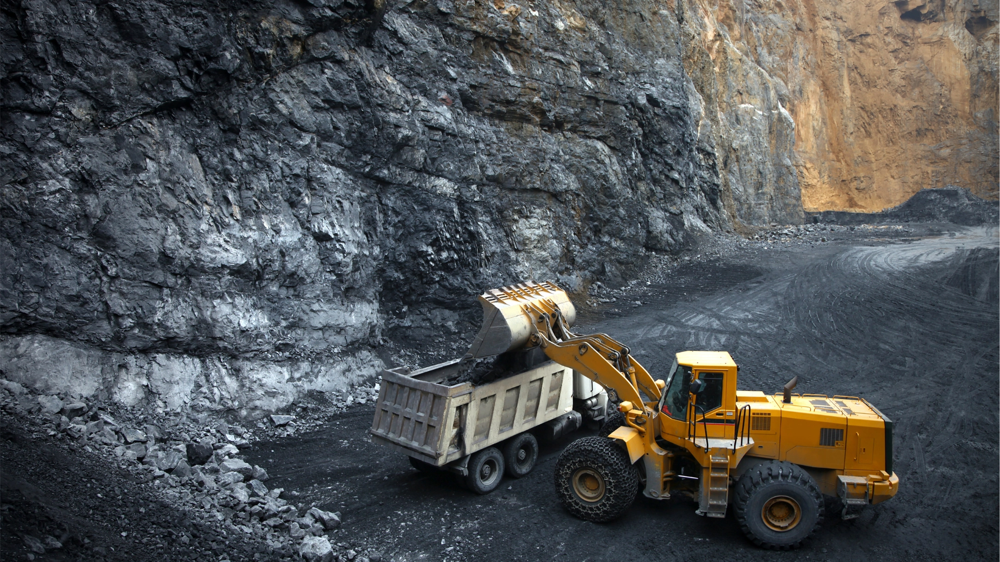

A commercial procurement roadmap covering certified laboratory assays, Incoterms, customs clearance, and Letters of Credit.
Sourcing industrial and metallic ores from Pakistan offers exceptional commercial value, but international procurement requires clear protocols for chemical testing, cargo insurance, customs documentation, and port handling. Whether importing Muslim Bagh Chromite, Khuzdar API Barite, Industrial Gypsum, or Lead-Zinc Sulfide, here is the exact end-to-end import procedure.
Step 1: Specification Alignment
Successful mineral trade begins with unambiguous chemical and physical parameter alignment. Before contracts are issued, buyers receive an initial Representative Laboratory Assay verified by certified X-ray Fluorescence (XRF) and Atomic Absorption Spectroscopy (AAS).
Contractual terms must explicitly state rejection thresholds and pro-rata bonus/penalty formulas for moisture, grain sizing, and deleterious elements (e.g., Silica in chromite, soluble calcium in barite, or sulfur in coal).
Step 2: Third-Party Inspection
To eliminate discrepancies between pit-head expectations and port arrivals, 100% of Balochistan Minerals export shipments are verified by internationally recognized third-party survey agencies:
- Sampling Protocol: Composite incremental sampling conducted according to ISO standards during truck offloading at Karachi/Hub consolidation yards.
- Weighing Verification: Multi-axle calibrated electronic weighbridge gross-tare receipts issued for every dispatched container or truck.
- Inspection Certificates: Independent Certificate of Quality, Certificate of Weight, and Certificate of Origin issued directly to the buyer’s confirming bank.

Step 3: Incoterms Selection
We provide flexible delivery options tailored to buyer logistics setups:
- FOB Karachi (KPT / PQM): Balochistan Minerals handles inland haulage, customs clearance, port terminal handling charges (THC), and loading on board the vessel nominated by the buyer.
- FOB Gwadar Port (GPA): Recommended for bulk break-bulk vessels heading directly to Gulf Cooperation Council (GCC) or East African ports.
- CFR / CIF Destination Port: Balochistan Minerals charters shipping line containers (FCL) or chartered bulk vessels, handling ocean freight and comprehensive marine cargo insurance.
Pakistan Mineral Export Procurement & Quality Assurance
SGS / BV InspectedBalochistan Minerals operates dedicated mine-to-shipment export controls, providing overseas buyers with authenticated XRF laboratory assays, multi-axle weighbridge slips, and streamlined WeBOC customs filing. Explore our full portfolio of certified mineral specifications.
Step 4: Payment & Documentation
Standard payment structures protect both counter-parties through tier-one commercial banking channels:
- Irrevocable Letter of Credit (LC): 100% at sight issued by an international bank, payable against presentation of clean on-board Ocean Bills of Lading and SGS certificates.
- Telegraphic Transfer (T/T): Common for trial container shipments (30% advance deposit with 70% balance against draft BL and lab assay copy).
- Standard Export Documents Included:
- Original Clean On-Board Ocean Bills of Lading (3/3 set)
- Signed Commercial Invoice & Detailed Packing List
- SGS / BV Certificate of Quality, Weight & Assay
- Certificate of Origin issued by Chamber of Commerce & Industry
- Customs Goods Declaration (GD) clearance copy
- Marine Cargo Insurance Certificate (for CIF terms)
Frequently Asked Questions
What specific documents are included in a standard mineral export shipping set from Pakistan?
A standard export package includes: Full Set (3/3) Clean on Board Ocean Bills of Lading, Signed Commercial Invoice and Packing List, Certificate of Origin issued by the Chamber of Commerce, independent Certificate of Quality, Weight & Assay issued by SGS, Bureau Veritas or Alfred H Knight, Customs Goods Declaration (GD), and Marine Cargo Insurance Certificate for CIF shipments.
Which Incoterms 2020 are recommended for containerized vs. breakbulk mineral shipments?
FOB Karachi (Karachi Port Trust or Port Qasim) is ideal for buyers who hold existing maritime carrier contracts and container allocations. CFR (Cost and Freight) or CIF (Cost, Insurance, and Freight) is recommended for importers seeking an all-inclusive delivered price to their regional port of destination without handling freight volatility.
How are Letter of Credit (LC) inspection clauses structured to protect buyer and supplier?
Payment is typically secured via an Irrevocable Documentary Letter of Credit (LC at Sight) confirmed by a tier-one international bank. The LC stipulates that negotiation and drawdown require an independent Certificate of Quality and Weight issued by an agreed international inspection firm (e.g. SGS) certifying that the commodity meets specified assay and sieve parameters.
What is the typical transit duration from Pakistani ports to international discharge gates?
Direct feeder connections from Karachi and Gwadar reach Arabian Gulf ports (Jebel Ali, Dammam, Sohar) in 3 to 6 days. Shipments to East Asian hubs (Tianjin, Qingdao, Shanghai, Busan) take approximately 14 to 18 days, while European Mediterranean destinations take between 18 and 24 days.
Initiate a Mineral Sourcing Program from Pakistan
Our trade desk guides international buyers through test samples, incoterms pricing, and contract drafting with 100% transparency.
Contact Import Desk